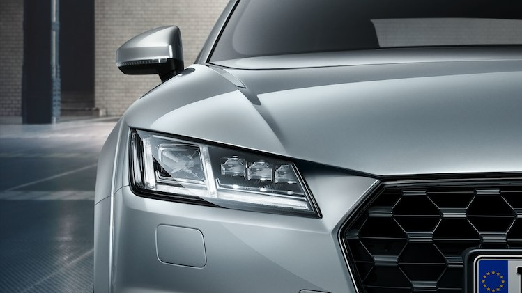

The Audi TT stands for driving pleasure, design and attention to detail.
The compact sports car with its sporty exterior has been developed further
without forgetting its history. Distinctive details such as the characteristic
round fuel filler cap with TT lettering bear witness to this. Its precise
handling and powerful engines reinforce this character.

The Audi TT Coupé is 4.19 meters (13.7 ft) in length
with a have short overhangs; their wheelbase measures 2.51 meters
(8.2 ft). The Audi TT Coupé leaves the factory on 17-inch wheels;
Audi and Audi Sport optionally offer 18, 19 and 20-inch wheels.
Fuel consumption combined *: 7.0-6.0 l/100km
CO₂-emissions combined *: 161-137 g/km

The light
Headlights with LED or Matrix LED technology are optionally available. The dynamic turn signals are a visual highlight
here.
Fuel consumption combined *: 7.0-6.0 l/100km
CO₂-emissions combined *: 161-137 g/km
Driver-oriented: das cockpit and infotainment
The optionally top-of-the-line MMI navigation plus with
MMI touch integrates a touchpad on the upper surface of the
rotary/push-button control that recognizes handwritten input and
allows zooming, for example. The MMI terminal on the center console has
just six keys. The voice control system understands formulations from
everyday speech. Besides the driver-oriented Audi virtual cockpit, the
basic version of the Audi TT Coupé features the multifunction steering
wheel plus, with which the infotainment and voice control system can be
controlled entirely using the steering wheel. Also standard are the
illuminated USB ports as well as Bluetooth for wireless pairing of
devices.
Fuel consumption combined *: 7.0-6.0 l/100km
CO₂-emissions combined *: 161-137 g/km